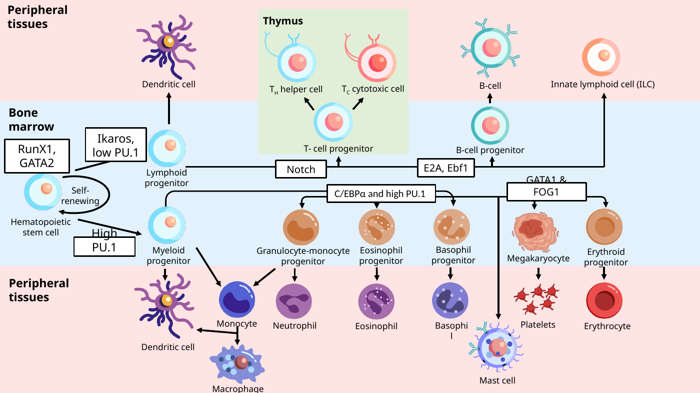
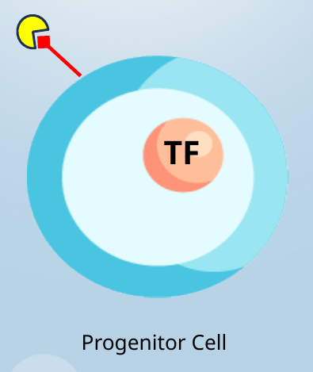

ACTIVITY 1 · HEMATOPOIESIS
Complete the lineage diagram
Each blank represents a location on the hematopoietic lineage tree. Choose the mature cell that belongs at that location. Use the dropdown menu at each location; this works with a mouse, touch, or keyboard. Each cell name is used once, except dendritic cells, which are shown at both branches in the original slide.
View Cana’s original lineage slide (reference)

Source: Lesson 1.1, slide 7. Close this reference to practice from memory.
Lymphoid progenitor
Select the cell at each destination.
Myeloid progenitor
Select the cell at each destination.
ACTIVITY 2 · CLASSIFICATION
Myeloid or lymphoid?
Sort each cell into the correct lineage. Choose an option for each row. For dendritic cells, select Both: Cana’s lecture notes explain that dendritic cells can develop from both lineages.
ACTIVITY 3 · SIGNALS AND CELL FATE
Identify the three parts
Study the cell illustration adapted from slide 8. Match the three visual features to the growth factor, surface receptor, or transcription factor.
